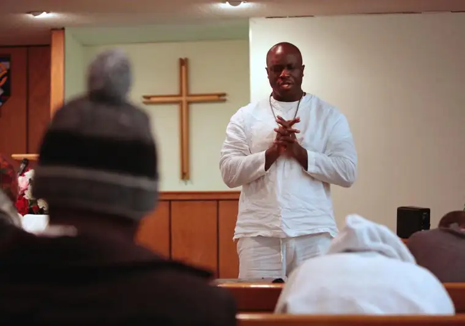

FARGO — The newly-baptized men at River of Life Church would prefer to think of themselves not as homeless but “misplaced.”
Though the former term relates to how they ended up at the New Life Center, where the church meets, it no longer describes their soul. Thanks to Reverend Nenkawah Gbeintor, they now have a secure anchor in the Lord.
“The devil wants to isolate you and burn your bridges so no one can cross over to you,” Gbeintor says, adding that in baptism, the soul becomes unchained.
“It’s like a cold Gatorade on a hot day,” he says. “When you go down into that water, whatever dirt you’ve gone through, it’s done. You’re free to walk in liberty.”
The New Life Center facility, according to its website, aims to help the homeless and hurting discover value and hope.
In the past six months, Gbeintor, or Pastor Barnabas, says he’s presided over nearly 40 baptisms of those who otherwise might be on the streets, possibly in a haze of alcohol or drugs.
Mohammed Abdillahi, only 22, first came to the United States around age 4, after being given away by his birth parents to another family, along with his older sister.
It was a life of instability and frequent moves. “We kept having to restart our lives over and over,” he says.
When his sister was kicked out of the house around age 12, Abdillahi says he felt abandoned by God and soon turned to drugs, alcohol and a life of lawlessness.
“I was just a bad kid, ever since I was little,” he says. “I eventually started other drugs, even meth, to cope with all of the pain. I was lying about my whole life story, saying horrible things to cover up other horrible things.”
One night, after getting into an argument with someone in Valley City, he started walking back to his home in Fargo, and, intoxicated, was hit by a semi.
“It was carrying 26,000 pounds, and I’m only 140 soaking wet,” he says. He flew “15 to 20 feet into the air.”
Lying on the side of the road with a broken leg, Abdillahi started talking to God. In time, he was rescued and flown by helicopter to a hospital, where his physical healing began.
Inside, he was still a wreck, he says, until a job opportunity came along that he really wanted. He pleaded with God, promising that if things worked out, he’d be baptized a Christian.
The job was granted and so was the baptism.
“God took away the drinking, drugs, lying and even the cigarettes,” Abdillahi says. “Now I read the Bible and go to devotions every morning. I’m at peace now. I believe God heard me that night and saved me, knowing it would lead to this moment.”
Now, as an usher at River of Life, he greets guests at the 10:30 a.m. service Sunday mornings.
“He wants to be a pastor,” Gbeintor says. “This is living proof that the Bible works. With patience and love, it works and it can happen to anyone.”
Mike Davis, 48, was what one might consider a hardened criminal, doing drugs and stealing, both in New York and his hometown in Michigan. Eventually, he ended up in North Dakota, seeking a better life for him and his family.
But when his marriage fell apart, Davis says, he spent several years searching — for a home, and for a God he’d known briefly in his past life as a Catholic.
After arriving at New Life Center, he met Gbeintor, who noted something special in Davis, and helped lead him to becoming ordained as an elder for the church.
“I’ve been elevated to help teach and basically help run the church,” says Davis, who is grateful to Gbeintor for seeing that he was “still teachable.”
“It’s all about relationship. That’s the big thing in this church,” he says. “Denomination doesn’t matter. It’s like a family.”
Mohammed Abukar, 41, lived in Michigan after moving here from Somalia, then relocated to Fargo to finish his schooling. But a history of domestic violence learned through his upbringing, he says, stayed with him, and it eventually ruptured his marriage.
When Abukar came to the New Life Center to stabilize, Gbeintor introduced him to Jesus.
“I was born and raised Muslim, but I’m a true Christian now,” he says, noting that while he understands the implications of his conversion, he doesn’t live in fear. “I have Jesus in my life. The fear is gone. If I die because of that reason, that’s the way I will die.”
Not everyone appreciates the changes in the men, who say they are sometimes called “switchers,” or “The Jesus Gang.”
“They’re being noticed, and that is a good thing,” Gbeintor says. “People did the same thing to Jesus, but they’re learning to rejoice in that (persecution) and not take offense.”
Gbeintor has his own story of redemption. In his youth, after fleeing war-torn Liberia and coming to America with his family — first to Pennsylvania — he became a “womanizing bad boy.”
But when that life turned sour, he found himself in a church praying, he says, and God responding.
“He said, ‘Eat my Word,'” Gbeintor says, adding that Jeremiah 15:16 confirmed what he’d heard. “I began studying the word of God and ‘ate’ the Bible for seven years. Now…I’m like a walking Bible.”
After “wandering through the wilderness,” Gbeintor came to North Dakota, married his wife Victorious and started an outreach ministry that is River of Life Church today.
He says Fargo has needed a church like the one he founded four years ago — a church after God’s own heart. “God was looking for a pure church that is moved with compassion for his people.”
As shelter supervisor at New Life, he mingles regularly with those most in need of healing, he says, and recently was promoted as chaplain.
The formerly-vacant chapel, thanks to Gbeintor, has been enlivened again, drawing the soul-thirsting who yearn to be washed clean.
“I’m able to look them in the eyes and say, ‘You can’t fool me,'” he says. “You’ve tried everything else; just give Jesus a month and if things don’t work out, you’ll get a money-back guarantee — me and Jesus will both pay you back.”
[For the sake of having a repository for my newspaper columns and articles, I reprint them here, with permission, a week after their run date. The preceding ran in The Forum newspaper on Jan. 28, 2017.]